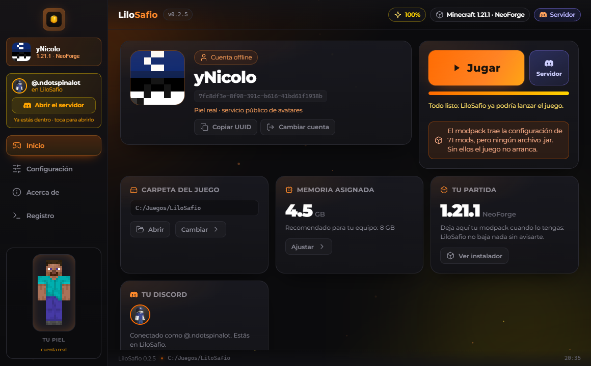
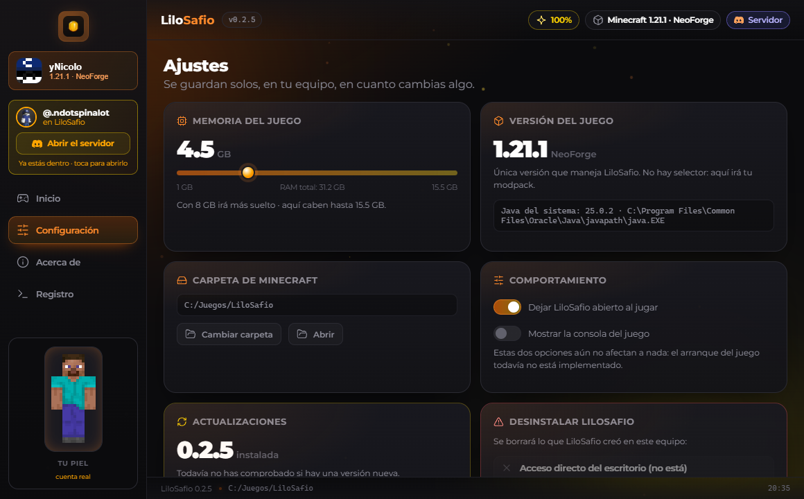
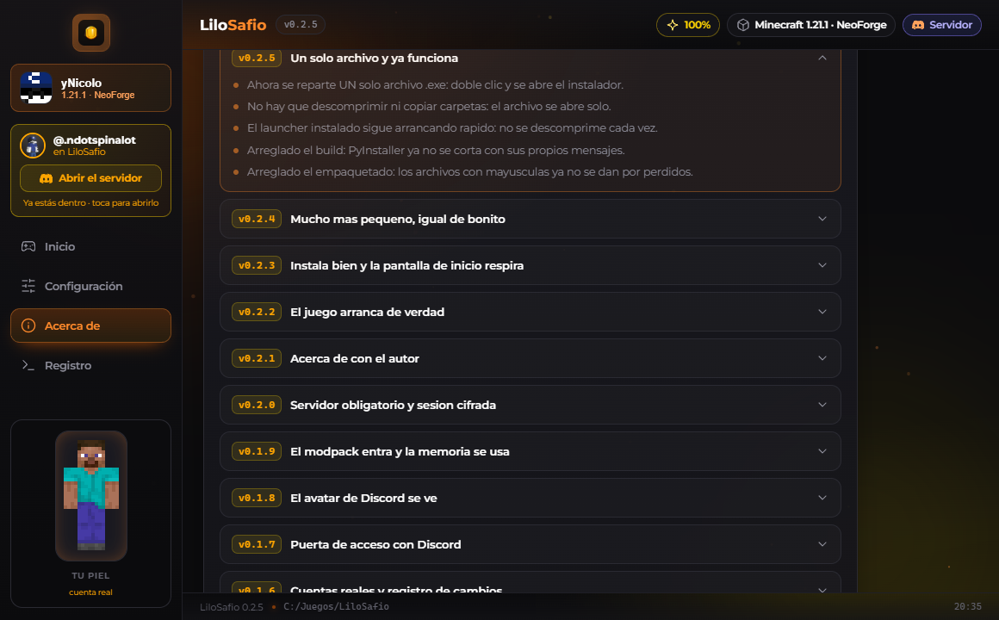

Tu servidor de LiloSafio,
en un solo archivo
Descargas el instalador, le das doble clic y ya está. No hay que descomprimir nada, ni copiar carpetas, ni decidir qué archivo es el bueno.
LiloSafioInstalador.exe · …
¿Tu antivirus te lo bloquea? Usa el .zip de repuesto
Descarga
Coge el instalador. Es un archivo y ya lo lleva todo dentro.
Instalador de un solo archivo
Doble clic y se instala. Es lo único que necesitas.
…
—
Carpeta comprimida (.zip)
Solo si tu antivirus bloquea el instalador. Se extrae y funciona igual.
—
—
Cómo funciona
Cuatro pasos y no hay que saber nada raro.
1. Descargas
Un archivo. El de arriba, el que dice Recomendado.
2. Doble clic
La primera vez se copia el launcher a tu equipo. Saltará un cartel si algo va mal.
3. Se instala solo
Te deja el acceso directo en el escritorio y descarga el modpack.
4. A jugar
Abres «LiloSafio Launcher» y le das a Jugar. A partir de ahí arranca rápido.
Novedades
Historial completo de versiones, el mismo que ves dentro del launcher.
Versiones publicadas
Cada instalador con su huella SHA-256. Si te has bajado el archivo y la huella no sale esta, no lo ejecutes.
Cómo se ve
Esto es lo que te va a aparecer al abrir el launcher.



Preguntas frecuentes
Lo que más se pregunta. Si tu duda no está aquí, escríbela en el Discord.
Mi antivirus dice que el instalador es sospechoso. ¿Es un virus?
No. El instalador es un ejecutable que se descomprime a sí mismo, y ese formato es exactamente el que algunos antivirus marcan por costumbre. Es un falso positivo conocido. Si te lo bloquean, descarga el .zip de repuesto: lleva lo mismo y no da problemas.
¿En qué Windows funciona?
En Windows 10 y 11 de 64 bits. En Mac, Linux o móvil no funciona, y no hay versión para esos sistemas.
¿Puedo jugar sin ser miembro del Discord?
No. Para entrar al servidor hay que estar dentro del Discord, es el único requisito. El launcher se instala y se usa igual; lo único que no se puede es entrar al servidor sin estar dentro.
¿Necesito comprar Minecraft?
Sí. Necesitas una cuenta de Minecraft (la de Java, la de Bedrock no vale). El launcher no incluye el juego: usa tu cuenta para que lo obtengas de Mojang como en cualquier launcher normal.
¿Cuánto ocupa?
El instalador ronda los …. Deja unos 8 GB libres en el disco, porque el juego y los mods ocupan la mayor parte.
¿Se puede desinstalar?
Sí. El launcher tiene un desinstalador que dice exactamente qué va a borrar
antes de hacerlo. Si lo borras a mano, se lleva la carpeta
%LOCALAPPDATA%\LiloSafio.
¿Se actualiza solo?
Se comprueba si hay versión nueva desde Ajustes. Si instalas una versión posterior, tu cuenta, tus mundos y tus ajustes se conservan.
Qué hace falta
Windows
10 o superior, de 64 bits. No funciona en Mac ni en móvil.
Espacio
Unos 8 GB libres. El juego se lleva la mayor parte.
Cuentas
Una de Minecraft (la de Java) y una de Discord.
Red
Solo al entrar al servidor y al descargar el juego.